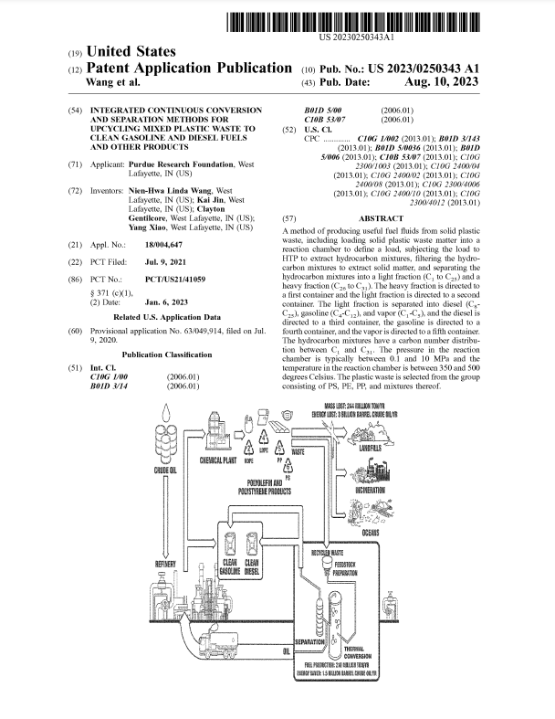
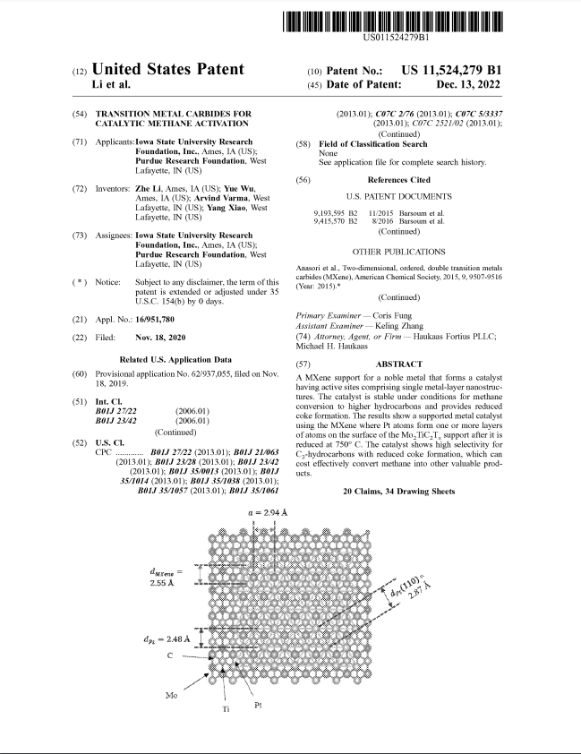
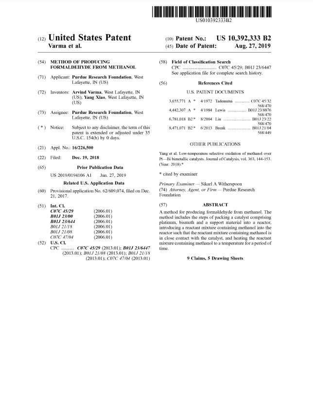
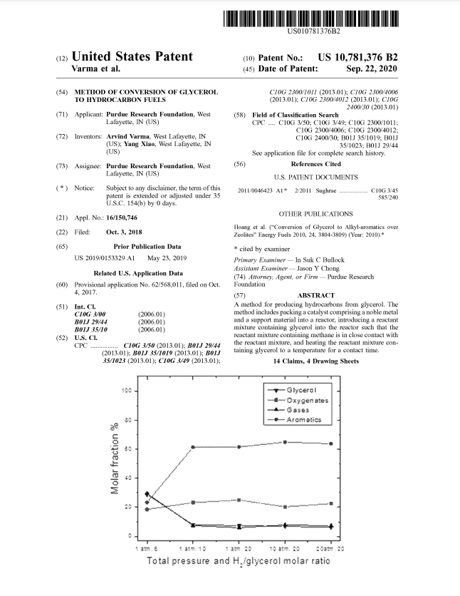
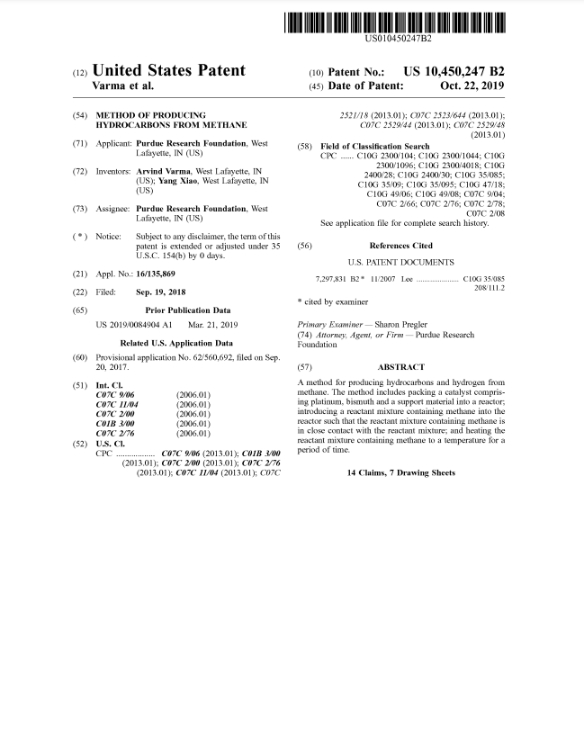
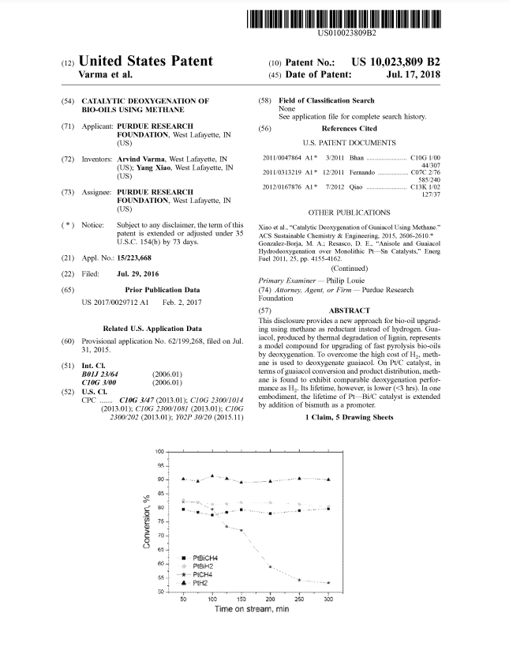

Please check out Dr. Yang Xiao's profile at Purdue University's Office of Technology Commercialization and his patents filed by Purdue Research Foundation. here.
7. Yang Xiao, Zhe Li, Yue Wu, and Fan Yang, Transition Metal Carbides for Catalytic Dehydrogenation of Short Alkanes, Patent No. US12698246B2, August 4, 2026.
6. Nien-Hwa Linda Wang, Kai Jin, Clayton Gentilcore, and Yang Xiao, Integrated Continuous Conversion and Separation Methods for Upcycling Mixed Plastic Waste to Clean Gasoline and Diesel Fuels and Other Products, Patent No. US12516248B2, January 6, 2026. PDF | Link
5. Yang Xiao, Arvind Varma, Zhe Li, and Yue Wu, Transition Metal Carbides for Catalytic Methane Activation, Patent No. US11524279B1, December 13, 2022. PDF | Link
4. Yang Xiao and Arvind Varma, Method of Conversion of Glycerol to Hydrocarbon Fuels, Patent No. US10781376B2, September 22, 2020. PDF | Link
3. Yang Xiao and Arvind Varma, Method of Producing Hydrocarbons from Methane, Patent No. US10450247B2, October 22, 2019. PDF | Link
2. Yang Xiao and Arvind Varma, Method of Producing Formaldehyde from Methanol, Patent No. US10392333B2, August 27, 2019. PDF | Link
1. Yang Xiao and Arvind Varma, Catalytic Deoxygenation of Bio-Oils Using Methane, Patent No. US10023809B2, July 17, 2018. PDF | Link





